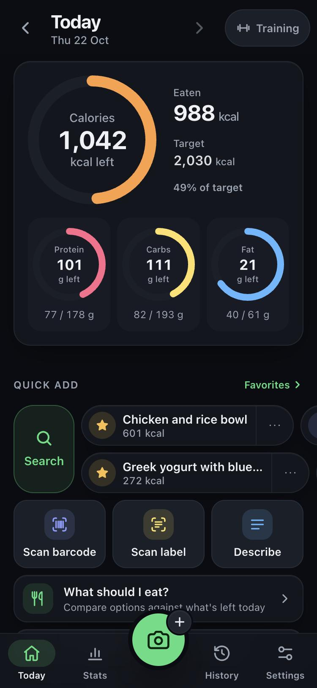
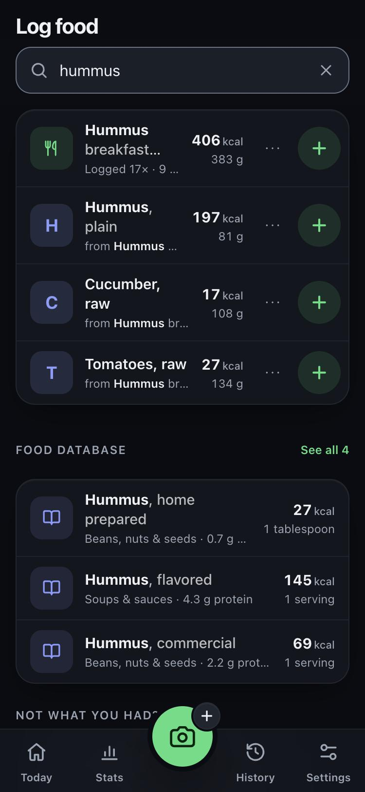
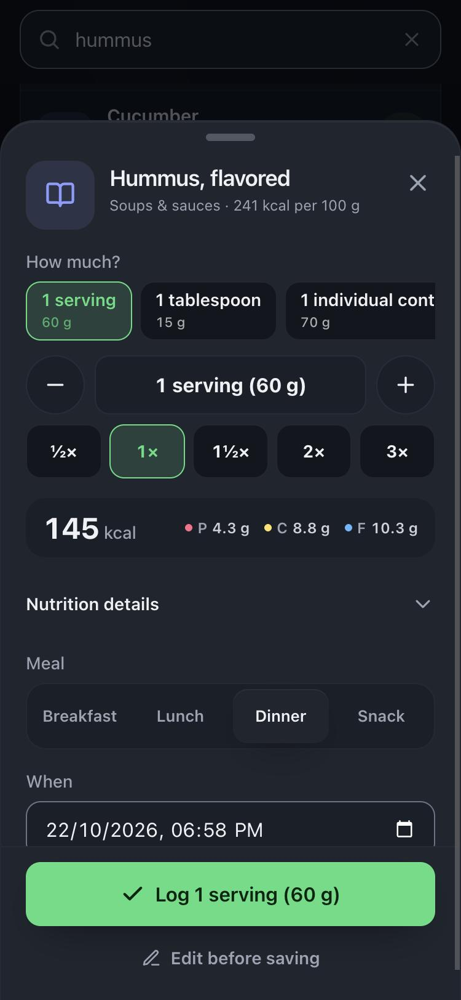
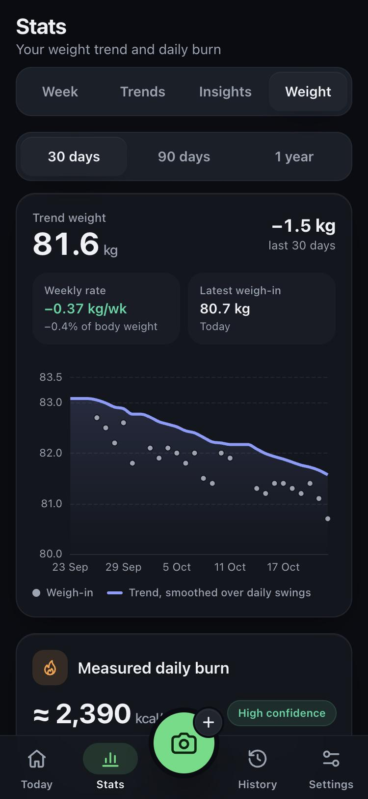
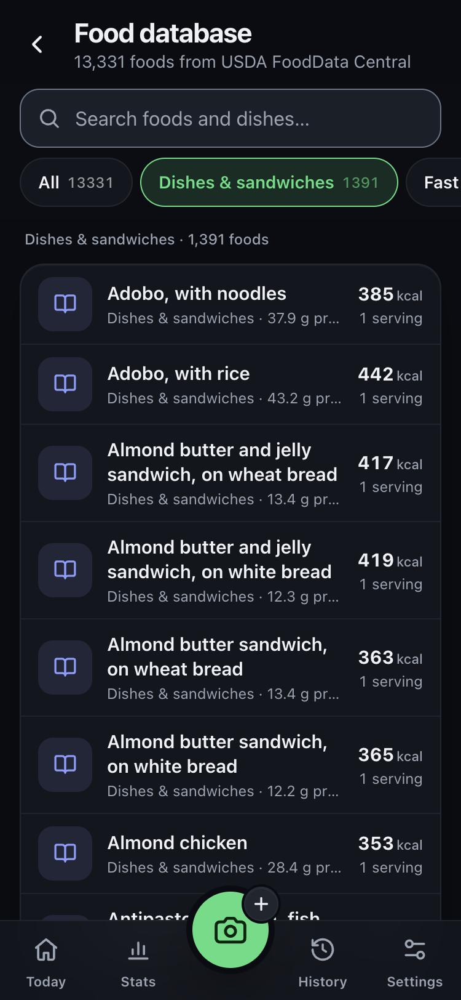

Know what you eat.Own what you log.
A free, open-source food tracker you run yourself. 13,331 foods built in, photo estimates with your own AI key if you want them, and no subscription, ads or tracking.
- AGPL-3.0
- Docker, amd64 and arm64
- Works without AI
- Installable on Android and iPhone

Features
Made for logging every day, not once.
Most meals are things you have eaten before. FoodLog makes those one tap, makes new foods quick and accurate, and keeps every number on your own server.
Search first, one tap to log
Everything you ever logged is searchable, with last time's portion. Type three letters and tap once. No AI call, no cost.
13,331 foods built in
USDA FoodData Central ingredients and dishes as eaten, with full nutrition, vitamins, minerals and household portions. Search forgives typos.
AI estimates, if you want them
Photo, nutrition label, voice and "my whole day" descriptions, from OpenAI, Claude, Gemini, OpenRouter, or Ollama and LM Studio on your own machine. Paste the key in Settings.
Accuracy over guesses
The model returns grams and per-100 g values, the server does the maths and checks it. Your description always wins over what the photo seems to show.
Barcodes that learn
Your own products first, then Open Food Facts. If a pack is unknown, scan its label once and the barcode is instant from then on.
A daily burn you can trust
A smoothed weight trend and your measured burn, calculated from what you ate and what the scale did, ready to use as your target.
Your library first, then 13,331 more foods.
Search shows what you have eaten before, then the food database under it. Pick a USDA portion, see calories and macros change as you go, log.
- Plain foods first: "egg" finds whole raw egg before an egg burrito
- Typos and synonyms: "chiken brest", "coke", "prawns", "aubergine"
- Browse 17 groups, from dishes and fast food to drinks and baby food
- Build a meal from ingredients with "From database" in any meal

Portions people actually use.
One serving, a tablespoon, a slice or a cup, as USDA measured them. Half, double or exact grams. Missing values in the source are shown, never guessed.

See where it is going.
Weekly calories against targets that follow your training days, 30 and 90 day trends, rule-based insights, and a weight trend that ignores daily swings.

And the rest of it
Everything else it does.
Screens
Five screens, and that is most of it.

Live demo
Try it before you install anything.
The demo gives you a private sandbox with two months of example meals, weigh-ins and water. Change anything you like. It is deleted after a day, and AI estimates are simulated so nothing is sent anywhere.
Get FoodLog
One server, everyone you cook for.
FoodLog runs as one Docker service with PostgreSQL. Your meals, photos and weights stay on it; the only things that ever leave are the requests you choose to send to an AI provider and barcode lookups to Open Food Facts.
Every copy is independent. You create the first account with the setup code from your server's log and you are its admin: no sign-up with us, nobody to approve you.
Docker Compose
- Runs on a home server, a VPS or a Raspberry Pi
- Prebuilt images for amd64 and arm64
- Backups with one pg_dump
git clone https://github.com/Chrishalaby/foodlog
cd foodlog && cp .env.example .env
docker compose up -d --buildYour AI, or none
- No key: search, food database, barcodes and manual entry
- Paste an OpenAI, Claude, Gemini or OpenRouter key in Settings: photo, label, voice and day estimates
- Or point it at Ollama or LM Studio on your own machine
Open source
AGPL-licensed, and staying that way.
The code is public and every fork or hosted copy has to stay open. There is no closed edition, no telemetry and no account with anyone but your own server.